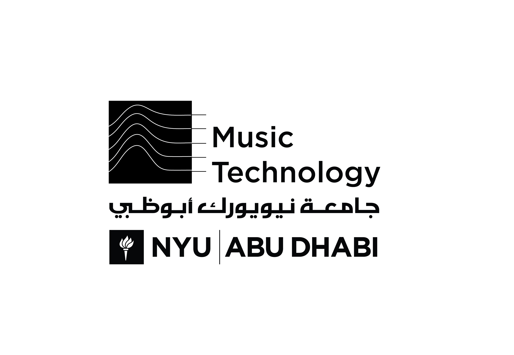
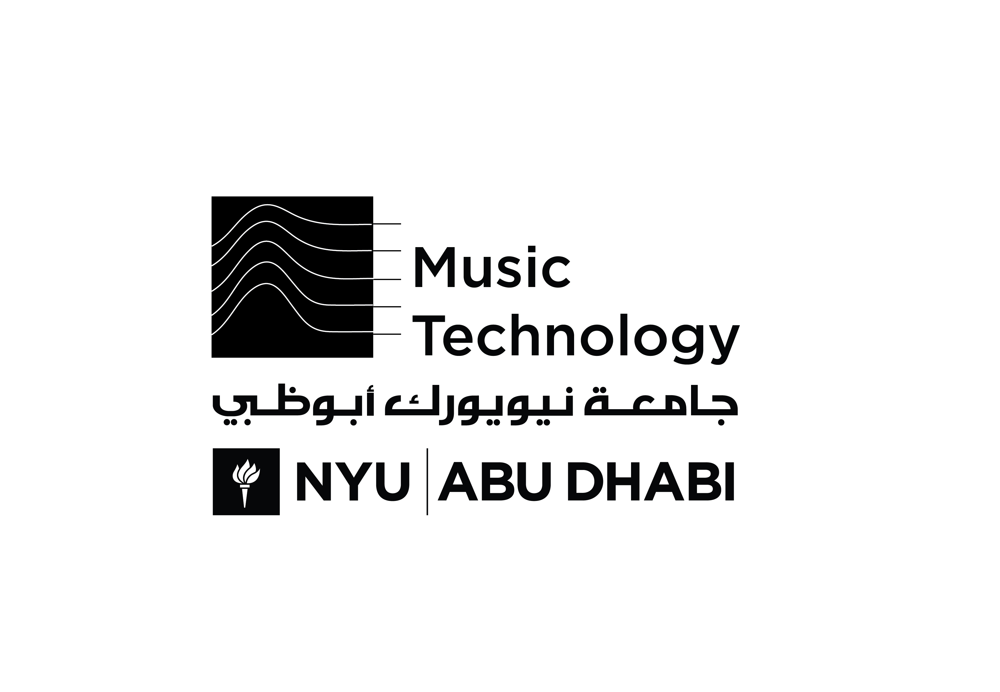
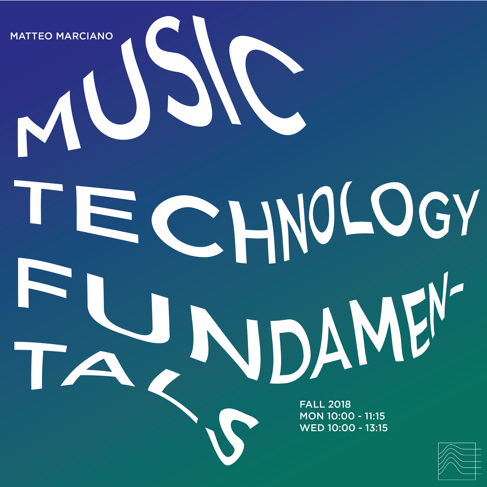
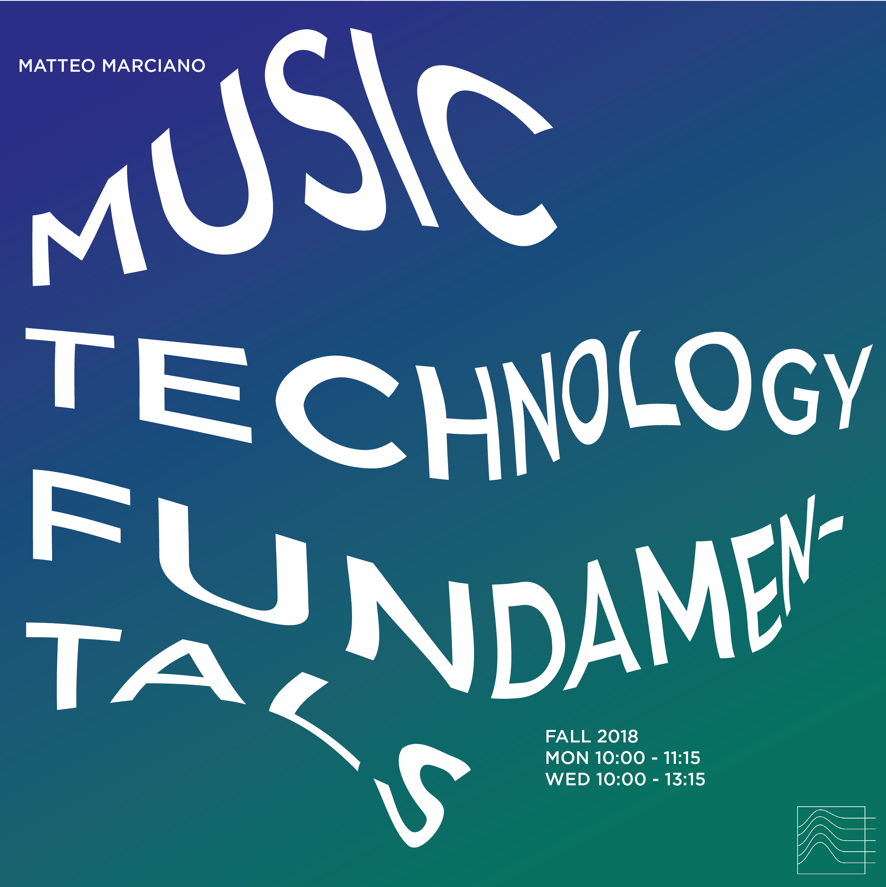

Despite the vast resources offered in the Music Technology program at NYUAD, there has not been enough awareness of these opportunities by the NYU Steinhardt Music Technology program, as well as the NYUAD student body.
Professor Matteo Marciano seeks to address this problem by creating a connection between the program in New York and in Abu Dhabi and by nurturing a tight-knit community of Music Tech students.
At the forefront of the visual identity is a logo that embodies the connection visually. Taking the lines that are out of the frame in the existing logo as a metaphor for reaching out and connecting, we use the same 5 lines to create a logo for Music Tech at NYUAD. The 5 lines flow smoothly from one logo to the next, conjuring the strong partnership between Music Tech at NYU Steinhardt and NYUAD.
The logo system is highly fluid and scalable. Using the same 5 lines, each site’s logo can embody the unique spirit of that city but at the same time, connects and flows smoothly into one another, creating a Music Tech wave that goes through the whole network.
The posters for Music Tech courses take the lines as a 3D grid for the typography to weave and warp into.
 



 
